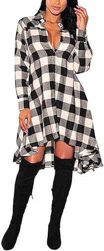

<INPUT TYPE=SUBMIT VALUE="Añadir producto al carrito" ></center>


<html>
<HEAD>
<Title>Vestidos</tiTle>
<!autor: Damaris Menjivar>
</head>
<body BGCOLOR="violet">
<center><font face="Curlz MT" SIZE=7 COLOR="red">vestidos</FONT></center>
<HR WIDTH=70% SIZE=10% COLOR="gray">
<FONT SIZE=7 COLOR=black>
<center><UL TYPE="SQUARE"></center>
<Center><LH>Vestido de noche formal.</LH></font></center>
<font size=5 color=blue>
<Center></center>
<center><Li> Tipo de tela: Está hecho de poliéster y elastano de alta calidad, buena tela elástica y suave transpirable.</center>
<center><Li> Cremallera en la espalda, longitud a la rodilla, cuello en V en la zona del pecho, parte frontal dividida que hace más sexy.</center>
<center><Li>Color: Rojo Vino.</center>
<center><Li> US $37.99</center>
<center><Li>Instrucciones de cuidado del material: Se puede lavar a mano en agua fría y separar con ropa ligera.</center>
<center><INPUT TYPE=CHECKBOX NAME= variable> Opción<br><br></center>
<center><INPUT TYPE=RADIO NAME= variable VALUE=Talla S >Talla S<BR></center>
<center><INPUT TYPE=RADIO NAME= variable VALUE=Talla M >Talla M<BR></center>
<center><INPUT TYPE=RADIO NAME= variable VALUE=Talla N >Talla N<BR></center>
<center><INPUT TYPE=RADIO NAME= variable VALUE=Talla XL>Talla L<BR></center>
</UL></font>
</BODY>
</HTML>


<FONT SIZE=7 COLOR=black>
<UL TYPE="Square">
<HR WIDTH=70% SIZE=10% COLOR="gray">
<Center><LH>Vestido corto con nudo frontal y cuello en V.</LH></font></center>
<font size=5 color=blue>
<center></center>
<Li>Tipo de tela: Poliéster y elastano. Hecho de tela de alta calidad; ligera, suave y cómoda.
<Li>Características: Vestido vintage unicolor con estampado floral, sexy cuello en V, nudo decorativo por delante, manga larga abombada.
<Li> Color: azul cielo</center>
<Li> US $13.60
<Li>Instrucciones de cuidado del material: Lavado a mano.
<br><INPUT TYPE=CHECKBOX NAME= variable> Opción<br><br>
<INPUT TYPE=RADIO NAME= variable VALUE=Talla S >Talla S<BR>
<INPUT TYPE=RADIO NAME= variable VALUE=Talla M >Talla M<BR>
<INPUT TYPE=RADIO NAME= variable VALUE=Talla N >Talla N<BR>
<INPUT TYPE=RADIO NAME= variable VALUE=Talla XL>Talla L<BR>
</UL></font>
</BODY>
</HTML>


<FONT SIZE=7 COLOR=black>
<center><UL TYPE="square"></center>
<HR WIDTH=70% SIZE=10% COLOR="gray">
<Center><LH>Vestido tipo camisa de manga larga con estampado a cuadros.</LH></font></center>
<font size=5 color=blue>
<Center></center>
<center><Li>Tipo de tela: Hecho de poliéster, ideal para primavera, otoño y principios de invierno.</center>
<center><Li>Patrón clásico a cuadros, vestido tipo camisa, manga larga, cuello polo, dos bolsillos laterales.</center
<left><center><Li>Color: Con cuadritos blancos, grises y negros.</center>
<center><Li>US $38.99</center>
<center><Li>Instrucciones de cuidado del material: Lavado a mano.</center>
<center><INPUT TYPE=CHECKBOX NAME= variable> Opción<br><br></center>
<center><INPUT TYPE=RADIO NAME= variable VALUE=Talla S >Talla S<BR></center>
<center><INPUT TYPE=RADIO NAME= variable VALUE=Talla M >Talla M<BR></center>
<center><INPUT TYPE=RADIO NAME= variable VALUE=Talla N >Talla N<BR></center>
<center><INPUT TYPE=RADIO NAME= variable VALUE=Talla XL>Talla L<BR></center>
</UL></font>
</BODY>
</HTML>

<br><center><A HREF="PARCIAL TIC.html">REGRESO AL INICIO</A></center>
